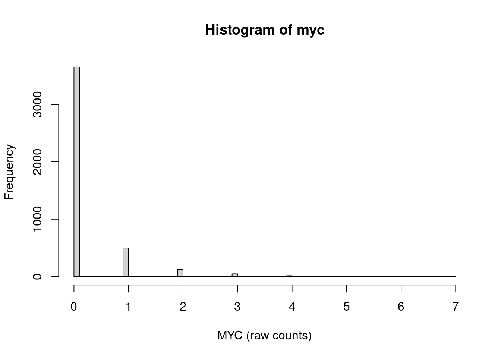

library(TENxPBMCData)
tenx_pbmc4k <- suppressMessages(TENxPBMCData(dataset = "pbmc4k"))
mean(counts(tenx_pbmc4k) == 0)[1] 0.9608314I am always looking for ways to communicate genomics analyses to collaborators in a way that allows them to drill down into the data themselves. Stand-alone HTML reports can be opened in any web browser and can support rich visualizations, making them my an indespensible tool in my tool kit.
Yet, some of the data I am working with, e.g. single-cell RNA-seq data, is pretty large, and the size of my HTML reports - which include the data as text - can quickly balloon. Luckily, there are ways to compress numerical data without loosing information.
Here, I am exploring two approaches: run-length encoding (RLE) and Lempel-Ziv-Welch (LZW) compression1.
Single-cell RNA-seq data are notoriously sparse, e.g. the majority of counts across genes & cells is zero. For example, 96% of all counts in the PBMC 4k single-cell experiment shared by 10X Genomics (and available via the TENxPBMCData Bioconductor package) are zero:
library(TENxPBMCData)
tenx_pbmc4k <- suppressMessages(TENxPBMCData(dataset = "pbmc4k"))
mean(counts(tenx_pbmc4k) == 0)[1] 0.9608314Most of the remaining counts are integers smaller than ten, with fewer than 0.2% of values exceeding that range:
mean(counts(tenx_pbmc4k) > 10)[1] 0.002338497This leads to very long runs of identical integers (most often zero), which can efficiently be represented through run-length encoding
For example, the expression of the transcription facto MYC gene is highly skewed towards zero counts:
myc <- local({
ensembl <- row.names(tenx_pbmc4k)[which(rowData(tenx_pbmc4k)$Symbol == "MYC")]
counts(tenx_pbmc4k)[ensembl, ]
})
hist(myc, breaks = 100, xlab = "MYC (raw counts)")
and there are long sequences of zeros and some shorter sequences of ones in the count vector. (Here, I am only showing counts for the the first 100 of the 4340 cells.)
head(myc, n = 100) [1] 0 0 0 1 3 0 0 0 1 0 0 0 0 1 1 1 0 0 0 1 1 0 0 0 0 0 0 0 0 0 0 0 0 0 0 1 0
[38] 0 0 0 0 0 0 0 0 0 0 0 0 1 0 0 0 0 0 0 0 0 0 0 0 0 0 0 0 0 0 1 2 0 1 0 0 0
[75] 0 0 0 1 0 0 0 0 0 0 0 0 1 0 0 0 0 0 0 0 0 0 1 0 1 0R estimates that the entire vector of 4340 counts occupies 17 KiB of memory.
This information can be communicated more concisely by noting each integer (e.g. zero) and the number of times it is repeated. The stats::rle function performs this conversion:
run_lengths <- rle(myc)
run_lengthsRun Length Encoding
lengths: int [1:1195] 3 1 1 3 1 4 3 3 2 14 ...
values : int [1:1195] 0 1 3 0 1 0 1 0 1 0 ...and returns two components:
head(run_lengths$values)[1] 0 1 3 0 1 0head(run_lengths$lengths)[1] 3 1 1 3 1 4This allows us to compress the original 4340 integers into 2390 integers (1195 length & value pairs), without losing any information.
By combining information about values and run-lengths, we can reconstruct the original vector, either manually:
0 x 3: 0,0,0,
1 x 1: 1,
3 x 1: 3,
0 x 3: 0,0,0,
1 x 1: 1,
0 x 4: 0,0,0,0,
1 x 3: 1,1,1,
...
=> 0,0,0,1,3,0,0,0,1,0,0,0,0,1,1,1,...or via inverse.rle:
head(inverse.rle(run_lengths), n = 16) [1] 0 0 0 1 3 0 0 0 1 0 0 0 0 1 1 1To store run-length encoded values e.g. in a text (or HTML) file, we can also represent them as characters, similar to our manual reconstruction above, e.g. separating values and lengths with an x:
myc_rle_separated <- mapply(paste,
run_lengths$values,
run_lengths$length,
MoreArgs = list(sep = "x")) |>
paste(collapse = ";")
substr(myc_rle_separated, 1, 40)[1] "0x3;1x1;3x1;0x3;1x1;0x4;1x3;0x3;1x2;0x14"This representation occupies only 4.9 KiB of memory - but half of the character string is required to encode the x and ; separators. We can do better!
To avoid including any separators, we can represent one of the numbers, e.g. the values, as a single character instead. For the MYC gene, the largest observed integer count is 7. So let’s represent all 8 values (including 0) with a letter of the alphabet instead:
dictionary <- setNames(letters[1:(max(myc) + 1)], 0:max(myc))
dictionary 0 1 2 3 4 5 6 7
"a" "b" "c" "d" "e" "f" "g" "h" For example, the letter a represents 0, b represents 1 and so on.
Now we can omit the x and ; separators, as each run is unambiguously represented by one character and an integer 2:
myc_rle_character <- mapply(paste0,
1 dictionary[as.character(run_lengths$values)],
run_lengths$length) |>
paste(collapse = "")
substr(myc_rle_character, 1, 21)[1] "a3b1d1a3b1a4b3a3b2a14"In this representation, the 4340 counts value for the MYC gene now occupy only 2.6 KiB of memory instead of the original 17 KiB. We can also write the data to a text (or HTML) file in this format, e.g. as a single string.
In this example, we only needed 8 letters to encode all observed unique counts for the MYC gene. But for other genes, especially those expressed at higher levels, we might observe many more possible values - even more than the 26 lower case letters of the English alphabet.
gapdh <- local({
ensembl <- row.names(tenx_pbmc4k)[
which(rowData(tenx_pbmc4k)$Symbol == "GAPDH")]
counts(tenx_pbmc4k)[ensembl, ]
})For example, in this dataset we observe 59 distinct count values for the highly abundant GAPDH gene:
table(gapdh)gapdh
0 1 2 3 4 5 6 7 8 9 10 11 12 13 14 15 16 17 18 19
485 683 708 572 430 302 216 146 118 122 85 56 58 44 40 22 24 25 16 13
20 21 22 23 24 25 26 27 28 29 30 31 32 33 34 35 36 37 38 39
18 15 11 10 13 4 6 4 10 4 8 4 4 7 6 1 5 7 2 2
40 41 42 44 46 48 49 50 52 53 54 56 57 61 70 75 85 92 181
5 4 1 4 1 2 1 2 2 1 2 1 1 2 1 1 1 1 1 Luckily, we are not restricted to the English alphabet. For example, we can map to any character in the Unicode Transformation Format – 8-bit (UTF-8) character encoding instead.
To encode e.g. all integers from 1 to 256 (more than enough for GAPDH) - but avoiding those that represent a space, quote, etc or integers - we can use UTF-8 codes 64 to 319:
codes <- 64:319
dictionary <- setNames(intToUtf8(codes, multiple = TRUE), 0:255)
head(dictionary, n = 66) 0 1 2 3 4 5 6 7
"@" "A" "B" "C" "D" "E" "F" "G"
8 9 10 11 12 13 14 15
"H" "I" "J" "K" "L" "M" "N" "O"
16 17 18 19 20 21 22 23
"P" "Q" "R" "S" "T" "U" "V" "W"
24 25 26 27 28 29 30 31
"X" "Y" "Z" "[" "\\" "]" "^" "_"
32 33 34 35 36 37 38 39
"`" "a" "b" "c" "d" "e" "f" "g"
40 41 42 43 44 45 46 47
"h" "i" "j" "k" "l" "m" "n" "o"
48 49 50 51 52 53 54 55
"p" "q" "r" "s" "t" "u" "v" "w"
56 57 58 59 60 61 62 63
"x" "y" "z" "{" "|" "}" "~" "\177"
64 65
"\u0080" "\u0081" And then use this dictionary to encode the GAPDH counts:
head(gapdh, n = 20) [1] 4 5 1 2 1 2 3 26 2 13 1 5 2 3 24 4 3 3 9 9gapdh_character <- local({
run_lengths <- rle(gapdh)
mapply(paste0,
dictionary[as.character(run_lengths$values)],
run_lengths$length) |>
paste0(collapse = "")
})
substr(gapdh_character, 1, 36)[1] "D1E1A1B1A1B1C1Z1B1M1A1E1B1C1X1D1C2I2"Because there are more (and shorter) runs in the GAPDH count vector than for MYC, the degree of compression we achieve is smaller, from 17 KiB for the original count vector to 7.8 KiB for the character representation.
In this post, the example dictionaries encode counts up to 256 - but many single-cell experiments will contain larger integer counts than 256.
For those, we either need to create a larger dictionary, or we could opt to truncate larger values (e.g. represent counts >= 256 with the same character, losing information in the process).
When visualizing gene expression scores, we often log2 transform the raw or normalized counts, generating floating point numbers. If it is acceptable to lose precision, we can round these log2 transformed scores to the nearest integer and apply run-length encoding to them.
Because 2 to the power of 256 is a very large number (~ 1.16e+77), we would be able to represent even the highest observed scores But on the flip side, rounding the log2 transformed scores would obscure some differences between expression levels.
At this point, we are representing the original count vectors as character strings. Some of these string representation contain repeated patterns, which we can exploit to compress them even further.
The Lempel–Ziv–Welch algorithm was the first widely used universal data compression method and is e.g. used in the GIF image format.
At a high level, the algorithm identifies the longest repeated sequences (“phrases”) in a character string and maps them to shorter expressions in a dictionary.
There are great tutorials about the LZW algorithm and its implementation available on the web, e.g. this one. Here, I will create a basic implementation in R 3.
compress_lzw <- function(input_string) {
1 dictionary <- setNames(intToUtf8(1:256, multiple = TRUE),
intToUtf8(1:256, multiple = TRUE)
)
next_code <- 257
2 previous_pattern <- character(0)
3 output <- character(0)
4 for (char in strsplit(input_string, "")[[1]]) {
5 new_pattern <- paste0(previous_pattern, char)
6 if (new_pattern %in% names(dictionary)) {
previous_pattern <- new_pattern
7 } else {
output <- paste0(output, dictionary[[previous_pattern]])
dictionary[[new_pattern]] <- as.character(intToUtf8(next_code))
next_code <- next_code + 1
previous_pattern <- char
}
}
if (nzchar(previous_pattern)) {
output <- paste0(output, dictionary[[previous_pattern]])
}
return(output)
}previous_pattern variable. It is initialized as an empty string.
output variable will collect the compressed output and is eventually returned. It is also initialized as an empty string.
previous_pattern is still empty. But in subsequent loops, we extend the previous one with the new character to identify longer patterns.
previous_pattern with the current one.
previous_pattern and add it to the outputLet’s apply our LZW compression function to the run-length encoded MYC expression we generated above:
myc_lzw <- compress_lzw(myc_rle_character)
myc_lzw[1] "a3b1d1āăa4b3ć2a1ĊĆ1ĂĒ7ăcĒĈ6Ĉ8Ĉ9Ĉ1ĞėĆ2bĎđa5ĈĪħīĈĖĆ6ąa2ij5ĘďĈĥıĦĉĔĴ2ĘĠŁĤĚįĠ0ĮĆ3ĸ1ĸ6ōŃĸĪĒġĒōĿŔĹĒěĆğĎ9ōłĎŚ1ŖĉĺĠĺfĆĨĨŧēĽĝŋœĽĿ20eŭōĻćŴŅĕżŪĒĨ7ąĚijŰğŋĈ4őĆŚƋāĶĽŰĽƎĆİŨŋŎŕũŭƟĩłŗļıĸƘĩĽŽĖĎŐƥď0Əďŧŝžďĸ3ƇƠĤƵ5ijěČ8ƸŇĒʼnƐŊďƒƒ1ŚIJƀưƈƌſĺƵ7ƣĴƍƃƧƃď4ąĸŽǂǏŧǞƞƌ4aNjhƌĎǢaƵƴĘijĨ8ƺƩħǠijNjĿŧĻcĎƝǘĤƲ1ŽƵ2ŚųśȂďǺĚǠǙDžĈŷĜǜŦȕęĒķƐţĴŚƆƐźĴȝŚůƵȇăgǽŪĭƙũƭĠŧĝĎƚƬƛƓȒĆȳȞŃņȜĕňĠœijǖƻƩȮȿƉȾĴdžȌťɍěȀijƹȚīǗNjŒļȭȸƶƚȁŌǤĸƚůůȁɣƸdzȱīȢƮĴɅďťĨĬɰĽƾȫɀƻɊƯĂȀƗĞǶĿǼƣǠǠƘȽɛȊɷďȻɯɔƪƂĤĨ3ƅģȷŰǗǕŏǛȹȋȊ3ȪǃșaʞĢ1ȢɠƶűǒƶƒĥĎǼįȐĤǶɣơɤȘʣȱōɍțāŢŧɯŽǤȑȌŽʔȁȁ˂ĺijĵɆɞǡăŬʾ1ȪȋȅżʛƳȖĠȉƉġĎŽʭȖŧɏʕŽŷ2źơ1ƱǏńžʧʸˬȓȖĨ23˪ſȷƫœƏǗ˟ĉōˈȊ˧ʲƶ˷ōƵʨĔ̉˄ŖʚǣɍŽ̓ƕ˶Ȗŏɪęʯĺɍ3ǎƷǏȊƅʡư˒ĄƄŶ˫Njɑď˱ŅȰ˺ȔȿȌǀƶ̬˂ʿďɭŚƑơNjŧʨ̬ġʨŚɼaİĸƒʤʢ̤͋ǍƧǶȊ5ǫōźƇȀʨʭƉɯ˃LJĒʨˡȕČĿɭnj˄̄ǶʊǵɆ˳ŻŜɋȗŞȢĊɛŷɍˤăƔƠČƵƎɽ̳̱ͦơ̸ĤȢ̔ŭ˂5ͳȖͤ˫ɐʥɇɜȊş˖Ǽ̀Ίͯŋǡͺʩ̲ǩįƿȽĒĥČɷˌǜʉ\u03a2ɜƨ˸ȃƤȣʫ\u0378ŋƉ0ȎɕƯ6"After LZW compression, R estimates the size of this new character representation to be 1.4 KiB, down from 2.6 KiB after RLE.
Next, let’s implement the corresponding decoding function!
decompress_lzw <- function(compressed) {
1 dictionary <- setNames(intToUtf8(1:256, multiple = TRUE),
intToUtf8(1:256, multiple = TRUE)
)
next_code <- 257
2 compressed_codes <- strsplit(compressed, "")[[1]]
# read the first character and decode it
3 current_code <- compressed_codes[1]
output <- dictionary[[current_code]]
previous_string <- output
# read the remaining characters, one by one
4 for (code in compressed_codes[-1]) {
if (as.character(code) %in% names(dictionary)) {
5 current_string <- dictionary[as.character(code)]
dictionary[[intToUtf8(next_code)]] <- paste0(previous_string,
substr(current_string, 1, 1))
} else {
current_string <- paste0(previous_string, substr(previous_string, 1, 1))
dictionary[[intToUtf8(next_code)]] <- current_string
}
output <- paste0(output, current_string)
next_code <- next_code + 1
previous_string <- current_string
}
return(output)
}Let’s test the function by restoring the RLE-encoded MYC counts we compressed above:
myc_lzw_decompressed <- decompress_lzw(myc_lzw)
head(myc_lzw_decompressed)[1] "a3b1d1a3b1a4b3a3b2a14b1a13b1a17b1c1a1b1a6b1a8b1a9b1a1b1a9b1c1a2b2a4b1a5b1a5b2a4b1a5b1a7b1a6d1a2d1a5c1a1b1a2b1a6b2a43b1a22c1b1a12c1a2b1a6b1a7b1a10b1a5b1a3c1a1c1a6c1a1b1a12c1a5b1a11b1a1c1a13b1a5b1a1b1a16b1a9b2a9c1a1c1b2a5b1a11b1a4b1a2b1a1b1a2f1a4b1a4b1a1b1a13b2a8b1a3c1a5b2a3b1a20e1a4c1a12b1a3b1a3c1a2b1a17c1a12b1a1b1a14b1a7d1b1a6d1a1b1a19b1a3b1a4c1a1b1a5b1a9b1a3d1a5b2a1b1a1b2a4c1a7b1a4b1a31c1a11b1a2b1a4b1a2b1a5c1b1a1c1a6b1a6c1a4c1a5b2a2b1a7b2a6c1a6b1a10c1a1b1a11b1a6b1a3b1a1c1a3d1b1a4b1a26b1a5d1a6b3a8c1a3b1a7b1a10b1a5b1a5b1a19b1a9b1a15b1a6d1a2b1a10b1a6d1a3b1a3c1b1a26b1a7c1b1a2b1a4b1a1b1c1a4b1a1b1a14d1c1a2b1a8c1a2b1a1b1a4d1a11b1a3b4a9b1a1h1a3b2a8c1a6b1a1b1a6c1d1a4b1a8d1b1a5b2a4c1a2d1a9b1a13b1a1b1a2b1c2a1c1a2b1a2c1a1b1a12b1a6b1a25b1a8b1a1b1a2b1a1d1a9b1a6c1a2b1a4b1a10b1a3b1a2b1a8b1a1b1a11b1a8b1a1b1a15c1a5c1b2a25b1a7d1a5e1a2c1b2a5b1a4b1a16b1a6b1a2b1g1b1a2b1a1b2a4b1a7b1a2b2a6b1a11b1a8b2a7b1a7b2a4b1a3d1a10b1a8b2a25b1a12b1a6b1a5c1a17b1a10b1a1c1a5d1a7c1a4b1a5b1a7b1a5c1d1a1b1a6b1a20b1a2b1a5b1a10b1a6b2a1d1a3d1a15b1a5c1b1a9b1a1b1a12c1a6b2a4b1a3d1a3b1a7b1a1c1a3c1b1a4c1a7b1a4b1a14b1a11c1a7b1a4c1a3d1a4b1a11b1a5e1a6c1a27c1a15b1a14b1a5b2a15b2a5d1b1a2b1a17b1a4b1d1a1b1a6b1a3b2a1b2a4b1a9d1b1a3b1a3b1a1c1b1c1a2c1a24c1b1a12b2a4b1a8b1a1b1a2b1a18b2a7c1a3d1b2a2c1a12b1a24b1a34b1a7b1c1a4b1a1b1a1c1b1a6b1a7c1a6c1a4b1a10b1a1b1a8b1a3g1c1a3b1a1b1a8b1a3b1a9b1e1a3c1a3b1a13b1a3b1a3b1a9b1a2b2a3b1a1b1a7c1a2b1a2d1b1a7b1a4b1a2b1a4b1a14b1a8b1a8b1a11c1a10b1a5c1a3c1a1c1b1a7c1a2b1a1b1a4b1a4b1a2b1a2b1a4b1a7b1c1a1c1a2b1a1b1a2d1a2d1a4b1a7b1a12b1a8b1f1a3c1g1a1b1a12c1a12c1a4b1a11b1a1b1a1b1a15b1a8d1a11b2a2b1a9b1a2b1a1b1a11b1a5b1a10b1c1a2b1a3b1a22e1b1a2b1a10c1a2b1a2c1a3b1e1a3b1a8b1a10b1a3b1a1b1a14b1a23e1b1a3c1a4b1a2b1a7c1a5c1a1b1c1b1a1b2a4c1a11c1a18b1a2b1a3c1a2b1a3b1a23c1a16b1a3c1a3b1c1a16b1a4b1a1b1c1a6c1a2b1a10b1a2b1a2b1a2b2a14b1a2b1a1b1a1c1a6b1a11b1a1b2a3b1a20b1a36d1a1c1a2b1a8b1a4b1a7c1a3b1a10f1a1d1a14b2a3b1a2b1a19b1a16b2a1e1a3b1a2b2a6b1a3c1a3b1a2b1a5c1a2b1a6b3a3b1a6b2a2b1a1c1a1c1a16c1a5b1a5b1a9b1a2b1a9b1a11b1a3c1a6b2a1b3c1a5b1a3b2a7b1c1a9b1a8b1a3b1a1b1a8b1a3b1c1a3b1a5b1a6c1a4d1b1a8b1a5h1c1a1e1d1b2a13c1a9b1a2d1a17c1a1b1a4b1a5b1a13c1a2b1a9b1a8b3a3b1a6c1a15b1a4b1a8b1a2d1b1a1b1a2b1a8d1a4b1a10b1a4c1a16b1a6b1a11b1a9e1a4b2a4b1a3b1a20b1a1b1a5b1d1a5b1a4b3a6b1a4c2a1b1a5c1a15b1a3c1a3b1a2b1a2b1a1c1a2e1a2b1a2b1a42b1a15e1a4b1a1b1a13b1a6b1a2b1a10b1a6b1a9b1a5b1a3d1a8b1a9b2a1b1a13b1a11b2a5e1a16b1a32b1a8d1a5b1a3b1a13b1a2b1a9b1a7d1a6b1a12b1a12b3a1b1a2b1d1a2b1a1b1a8b1a1b1a12b1a3d1a4c1a3e1a2c1a1c1a2c1a3b1a1b1a5b1a3d1a10d1a9b1a15b1a6b1a6"Are the results of sequention compression & decompression really identical to the input string?
identical(
decompress_lzw(compress_lzw(myc_rle_character)),
myc_rle_character)[1] TRUEBecause it’s hard to visually compare the long vectors we have compressed & decompressed above, here is a toy example:
original_string <- "MARYHADALITTLELAMBMARYHADALITTLELAMBMARYHAD"
compressed <- compress_lzw(original_string)
decompressed <- decompress_lzw(compressed)Original String: MARYHADALITTLELAMBMARYHADALITTLELAMBMARYHAD Compressed: MARYHADALITTLELAMBāăąćĉċčďđēĄĆ Decompressed: MARYHADALITTLELAMBMARYHADALITTLELAMBMARYHAD We have applied two rounds of compression to our count (or rounded, log2 transformed counts) single-cell RNA-seq data, achieving considerable reduction in the size of the objects 4.
While I have created examples of RLE and LZW compression using R, the same approach can be implemented in any programming language. The reports generated by Parse Bioscience, for example this one, include rounded log2 gene expression counts for all assayed genes across all cells that was compressed in the same way 5. To decode the compressed strings, the html reports include javascript functions that perform the same operations established here.
Combined with interactive plots, users can enter a gene name, triggering the decoding of its gene expression scores and updating a UMP plot in their browser - without the need for any central server. (Take a look at the source code of one of their reports to see how this is achieved!)
Now that I have a better understanding of how large amounts of data can be included in a stand-along HTML document, I am ready to learn more about javascript & interactive visualizations 6!
sessionInfo()R version 4.4.1 (2024-06-14)
Platform: x86_64-pc-linux-gnu
Running under: Debian GNU/Linux 12 (bookworm)
Matrix products: default
BLAS: /usr/lib/x86_64-linux-gnu/openblas-pthread/libblas.so.3
LAPACK: /usr/lib/x86_64-linux-gnu/openblas-pthread/libopenblasp-r0.3.21.so; LAPACK version 3.11.0
locale:
[1] LC_CTYPE=en_US.UTF-8 LC_NUMERIC=C
[3] LC_TIME=en_US.UTF-8 LC_COLLATE=en_US.UTF-8
[5] LC_MONETARY=en_US.UTF-8 LC_MESSAGES=en_US.UTF-8
[7] LC_PAPER=en_US.UTF-8 LC_NAME=C
[9] LC_ADDRESS=C LC_TELEPHONE=C
[11] LC_MEASUREMENT=en_US.UTF-8 LC_IDENTIFICATION=C
time zone: America/Los_Angeles
tzcode source: system (glibc)
attached base packages:
[1] stats4 stats graphics grDevices datasets utils methods
[8] base
other attached packages:
[1] TENxPBMCData_1.24.0 HDF5Array_1.34.0
[3] rhdf5_2.50.1 DelayedArray_0.32.0
[5] SparseArray_1.6.0 S4Arrays_1.6.0
[7] abind_1.4-8 Matrix_1.7-0
[9] SingleCellExperiment_1.28.1 SummarizedExperiment_1.36.0
[11] Biobase_2.66.0 GenomicRanges_1.58.0
[13] GenomeInfoDb_1.42.1 IRanges_2.40.1
[15] S4Vectors_0.44.0 BiocGenerics_0.52.0
[17] MatrixGenerics_1.18.0 matrixStats_1.4.1
loaded via a namespace (and not attached):
[1] KEGGREST_1.46.0 xfun_0.49 lattice_0.22-6
[4] rhdf5filters_1.18.0 vctrs_0.6.5 tools_4.4.1
[7] generics_0.1.3 curl_6.0.1 AnnotationDbi_1.68.0
[10] tibble_3.2.1 RSQLite_2.3.9 blob_1.2.4
[13] pkgconfig_2.0.3 dbplyr_2.5.0 lifecycle_1.0.4
[16] GenomeInfoDbData_1.2.13 compiler_4.4.1 Biostrings_2.74.1
[19] htmltools_0.5.8.1 yaml_2.3.10 pillar_1.10.0
[22] crayon_1.5.3 cachem_1.1.0 mime_0.12
[25] ExperimentHub_2.14.0 AnnotationHub_3.14.0 tidyselect_1.2.1
[28] digest_0.6.37 purrr_1.0.2 dplyr_1.1.4
[31] BiocVersion_3.20.0 fastmap_1.2.0 grid_4.4.1
[34] cli_3.6.3 magrittr_2.0.3 withr_3.0.2
[37] rappdirs_0.3.3 filelock_1.0.3 UCSC.utils_1.2.0
[40] bit64_4.5.2 rmarkdown_2.29 XVector_0.46.0
[43] httr_1.4.7 bit_4.5.0.1 png_0.1-8
[46] memoise_2.0.1 evaluate_1.0.1 knitr_1.49
[49] BiocFileCache_2.14.0 rlang_1.1.4 glue_1.8.0
[52] DBI_1.2.3 BiocManager_1.30.25 renv_1.0.11
[55] jsonlite_1.8.9 R6_2.5.1 Rhdf5lib_1.28.0
[58] zlibbioc_1.52.0 
This work is licensed under a Creative Commons Attribution 4.0 International License.
Both of these approaches are used e.g. in the summary HTML reports generated by Parse Bioscience’s analysis pipeline, e.g. in this example report. The HTML file contains transcriptome-wide gene expression scores for > 50,000 cells, and users can visualize the expression of their favorite gene on a UMAP projection. The whole HTML file is ~ 60 MB in size.↩︎
Because runs can be very long, the lengths - represented as integers - have varying number of decimals.↩︎
While this implementation works, it could be improved. For example, it doesn’t set any limits on the size of the final dictionary.↩︎
Typical file formats used to exchange single-cell RNA-seq count tables are using more sophisticated ways of compression. For example, applying gzip compression to CSV files with sparse count data will reduce their sizes tremendously. Other formats, e.g. HDF5 or Parquet files also take advantage of compression algorithms.↩︎
The encoding & compression is happening when the report is generated, but the decoding javascript functions are part of the HTML report.↩︎
Greg Wilson’s Javascript for Data Scientists course has been on my to-do list for a while.↩︎